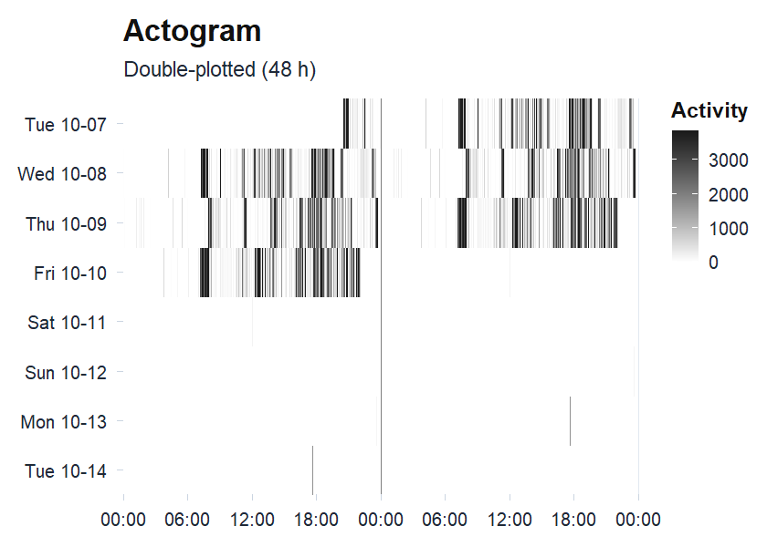

actiRhythm turns activity counts or raw acceleration into a complete picture of the circadian rest-activity rhythm. It reads ActiGraph .agd counts and raw .gt3x, .cwa, and .bin recordings, auto-calibrates the raw signal, and derives the ENMO, MAD, and z-angle metrics that agree with GGIR. From a single recording it computes what a chronobiology analysis reports, from the nonparametric measures and cosinor through periodograms and fractal structure to wavelet and empirical-mode decomposition, sleep scoring, and a state-space rest-activity model. Methods that usually live in separate packages, or in no R package at all, sit behind one consistent interface, and every analysis returns a typed object that prints its own summary and draws its own plots.
Each method carries the reference that defined it, and where a trusted implementation already exists, actiRhythm is checked against it: the raw metrics against GGIR, the single-component cosinor against the cosinor package, and the nonparametric measures against nparACT and ActCR. Those cross-checks run live in the package’s validation article.
You can usually see the answer before you compute it. Plot a recording as an actogram and a regular sleeper forms a single vertical band of activity at the same clock time each day, while a drifting rhythm scatters across the panel. The numbers that follow put a figure to what the picture shows, from Witting (1990) and van Someren (1999) through Cornelissen (2014) and the periodogram.
Installation
# install.packages("remotes")
remotes::install_github("rdazadda/actiRhythm")actiRhythm needs R 4.1 or newer and a C++17 compiler (Rtools on Windows, the Xcode command-line tools on macOS) for the small backend behind its nonparametric metrics.
A first analysis
One ActiGraph recording ships with the package, so this runs without any data of your own. The bundled file is a single de-identified 60-second-epoch recording, included only so the examples run.
library(actiRhythm)
# Read the bundled .agd and pull the count series
agd <- agd.counts(read.agd(example_agd(1), verbose = FALSE))
# Describe the rest-activity rhythm without assuming a waveform
rhythm <- circadian.rhythm(agd$axis1, agd$timestamp)
rhythm
#>
#> Circadian Rhythm Analysis
#>
#> Data Summary
#> Days analyzed: 8
#> Valid circadian days: 6
#> Epoch length: 60 seconds
#>
#> Non-Parametric Metrics (IS/IV: Witting et al. 1990; RA/L5/M10: van Someren et al. 1999)
#> L5 (least active 5h): 6.10 counts/min, onset 01:28
#> M10 (most active 10h): 602.93 counts/min, onset 12:02
#> L1 (least active 1h): 3.10 counts/min, onset 02:35
#> M1 (most active 1h): 1175.51 counts/min, onset 17:43
#> Relative Amplitude (RA): 0.9800 (range 0-1, higher=stronger rhythm)
#> Interdaily Stability (IS): 0.2279 (range 0-1, higher=more consistent)
#> Intradaily Variability (IV): 1.0008 (near 0 = sine, near 2 = noise)
#> Phi (autocorrelation): 0.4151 (higher=more predictable)
#>
#> Sleep-Based & Variability Metrics
#> Sleep Regularity Index: Not calculated (requires sleep_state input)
#> Onset timing variability: 2.23 hours
#> L5 timing variability: 0.77 hours (circular SD)
#> M10 timing variability: 3.70 hours (circular SD)
#>
#> References: Witting (1990), van Someren (1999)The actogram is usually the first thing worth plotting.
plot_actogram(agd$axis1, agd$timestamp)
Double-plotted actogram: each row is one day shown twice across 48 hours, so a stable rhythm forms a vertical band of activity at the same clock time each day, while scattered fill marks a fragmented or shifting rhythm.
For this recording a high relative amplitude near 0.98 sits with a low interdaily stability near 0.23: the days are strongly active, but the pattern does not land at the same clock time from one day to the next. Every number and figure here regenerates from the installed package and its bundled recording, and the calculations behind them are exercised by the package’s test suite.
What the package covers
Cosinor and the spectrum. cosinor.analysis() fits a 24-hour cosine (Cornelissen 2014) and rhythmicity.test() checks whether the rhythm is statistically real; cosinor.multicomponent() adds harmonics and population.cosinor() compares groups. circadian.period() estimates the free-running period from a Lomb-Scargle periodogram (Lomb 1976) and chi.sq.periodogram() from the chi-square periodogram (Sokolove 1978); period.ci() puts a bootstrap interval on it, and circadian.spectrogram() shows how the period drifts across the recording. fractal.dfa() measures the long-range correlation in the series (Peng 1994), and mfdfa() and multiscale.entropy() describe its finer nonlinear structure.
Rhythms that move rather than repeat. A set of nonstationary methods reads the change directly. circadian.wavelet() returns the time-frequency power surface with its cone of influence, circadian.emd() with hilbert.huang() give a data-adaptive decomposition and an instantaneous period, and circadian.ssa() separates the series into trend, circadian, and residual components. circadian.flm() fits a functional model of the daily profile, rest.hmm() infers rest and active states with a hidden Markov model, sleep.changepoints() locates each night’s onset and wake straight from the counts (Chen and Sun 2024), and curve.registration() aligns the days on their active-phase landmark for a scale-invariant phase marker.
Sleep, regularity, and fragmentation. sleep.cole.kripke() and sleep.sadeh() score each epoch as sleep or wake (Cole et al. 1992; Sadeh et al. 1994). rest.periods() (Roenneberg et al. 2015) returns every consolidated rest bout, naps included, while rest.crespo() (Crespo et al. 2012) detects the main daily rest periods. sleep.regularity.index() (Phillips 2017), social.jet.lag(), and lids() (Winnebeck 2018) summarise sleep regularity, chronotype misalignment, and the ultradian sleep cycle, and phase.concentration() and state.transitions() test day-to-day phase clustering and rest-activity fragmentation.
From files to counts to raw acceleration. Counts can come from more than .agd files: read.actigraph.csv() reads ActiLife epoch CSVs, and read.raw() turns raw .gt3x, .cwa, and .bin files into counts with the agcounts implementation of the ActiGraph count algorithm (Neishabouri 2022); gt3x.counts(), axivity.counts(), and geneactiv.counts() do the same per brand, with cross-brand counts treated as an approximation rather than native ActiGraph output. raw.metrics() returns per-epoch ENMO, MAD, and the z-angle with van Hees (2014) auto-calibration, and circadian.raw() runs every method above on ENMO from one call. The z-angle drives a diary-free sleep pipeline that counts cannot: rest.spt() finds the nightly sleep-period window (HDCZA, van Hees 2018), sib.vanhees() scores sustained-inactivity bouts (van Hees 2015), and sleep.from.spt() reports onset, wake, WASO, and efficiency. detect.nonwear.choi(), detect.nonwear.troiano(), and detect.nonwear.raw() flag non-wear time (Choi et al. 2011; Troiano et al. 2008; van Hees et al. 2013).
Plots and batch reports. Every analysis prints a readable summary and draws a themed ggplot: the actogram and periodogram, the spectrogram, the cosinor fit and confidence ellipse, the wavelet scalogram, the singular-spectrum components, a circular phase rose, and a rest-detector comparison strip, each one you can recolour with theme_actiRhythm() and save with save.circadian.plot(). When a study has many files, circadian.batch() runs the whole pipeline over a folder and returns one row per recording, and circadian.workbook() writes the full analysis to a multi-sheet Excel file.
Documentation
The package website, https://rdazadda.github.io/actiRhythm/, collects the full documentation. vignette("actiRhythm") is the get-started walkthrough and vignette("output-codebook") is a data dictionary for every metric the package reports. A set of articles goes deeper: Choosing a method maps each question to the right function, Validation against reference packages cross-checks the metrics live against GGIR, nparACT, ActCR, and the cosinor package, and the method-family articles (nonparametric, cosinor, period, fractal, nonstationary, phase and regularity, sleep, raw acceleration, batch) each work one family from the math to a worked example. Every function’s help page also carries its method reference, so ?circadian.rhythm, ?cosinor.analysis, and ?circadian.period are good places to read more. Questions and bug reports go to the issue tracker at https://github.com/rdazadda/actiRhythm/issues, and contributions are welcome.
Citation
Run citation("actiRhythm") for the entry to use in published work. When you publish results, report the version you ran, from packageVersion("actiRhythm"), so the analysis stays reproducible across releases.
License
MIT, see LICENSE.
actiRhythm is developed and maintained by the Center for Alaska Native Health Research at the University of Alaska Fairbanks.